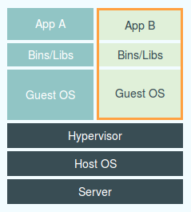
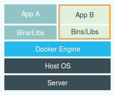
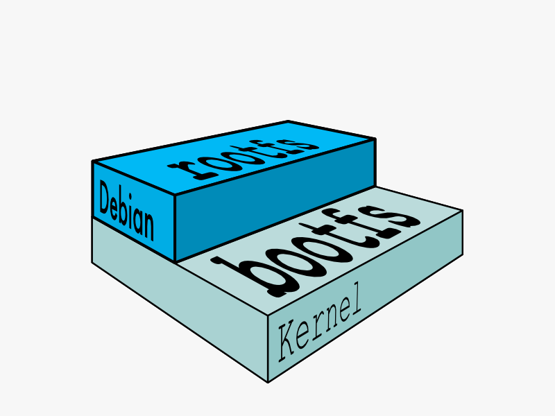

Not
Created by Duncan Fedde / @dfedde
my name is Duncan Fedde
I live in Centennial, CO
I Do Ruby development/operations
I Work @Enserca Integrated Solutions
I tweet @dfedde
I chat on freenode/#sofreeus
duncan.fedde.us/docker_talk
To be placed in own vm session
ssh docker_student@docker_workshop.fedde.us
Enter your name
What will we talking about Today?
docker
and if we have time touching on
dockerhub

fig
docker swarm
docker compose

docker machine

and
rocket
So I can get a feel for the room...
who has used
docker
any hypervisor tool
Virtual box kvm vmwareLXC
Linux Containerschroot jails
git
so what is docker
Docker is...
- Portable
- lightweight
- Application Containers
lets take a look at those things one by one
first off
what is an application container
contains everything it needs to run the application
isolated from other applications
what do we mean by light weight
hypervisor vm
Docker
don't need to run the entire os
what do we mean by portable
we are going to have to learn a bit of how docker works
